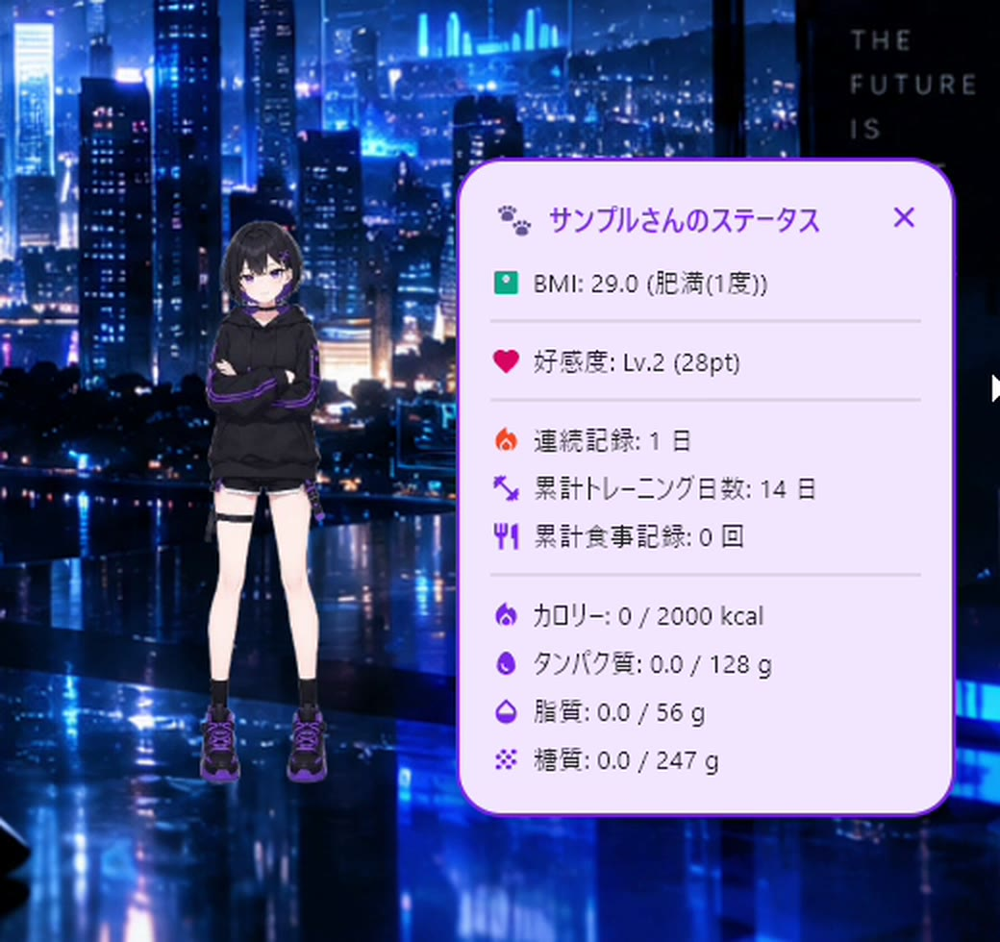
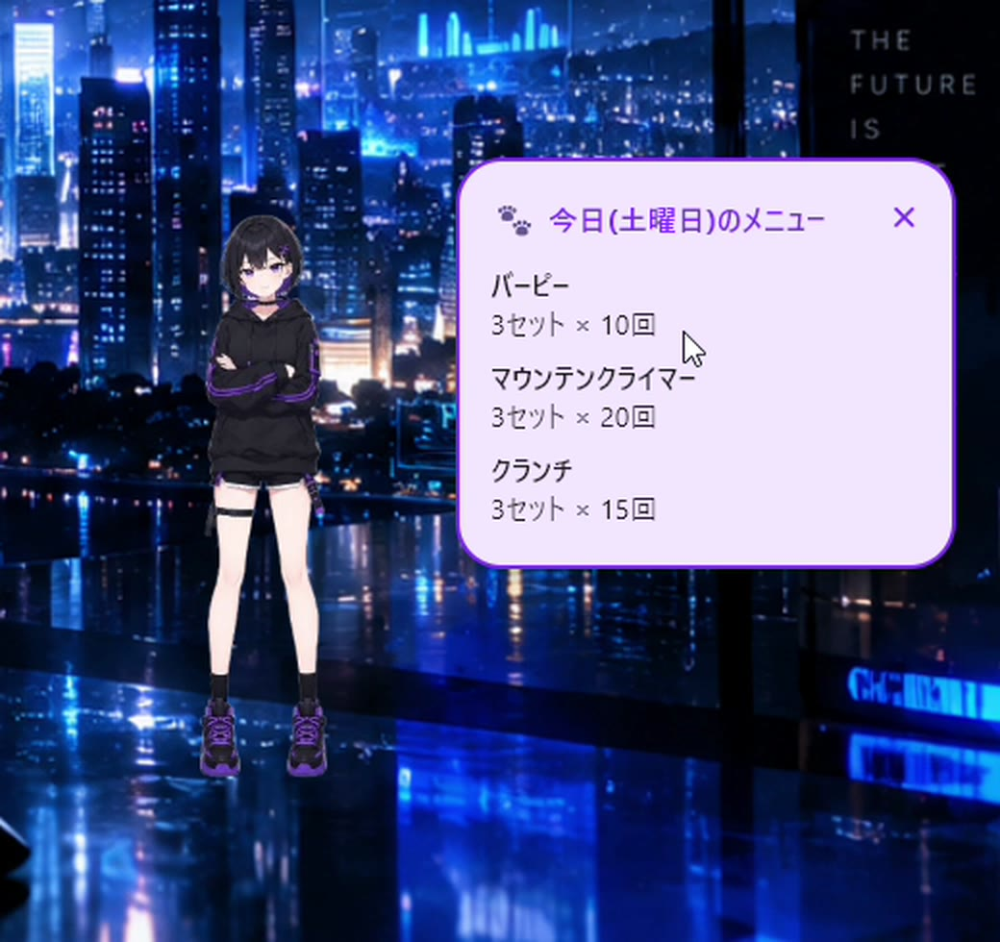
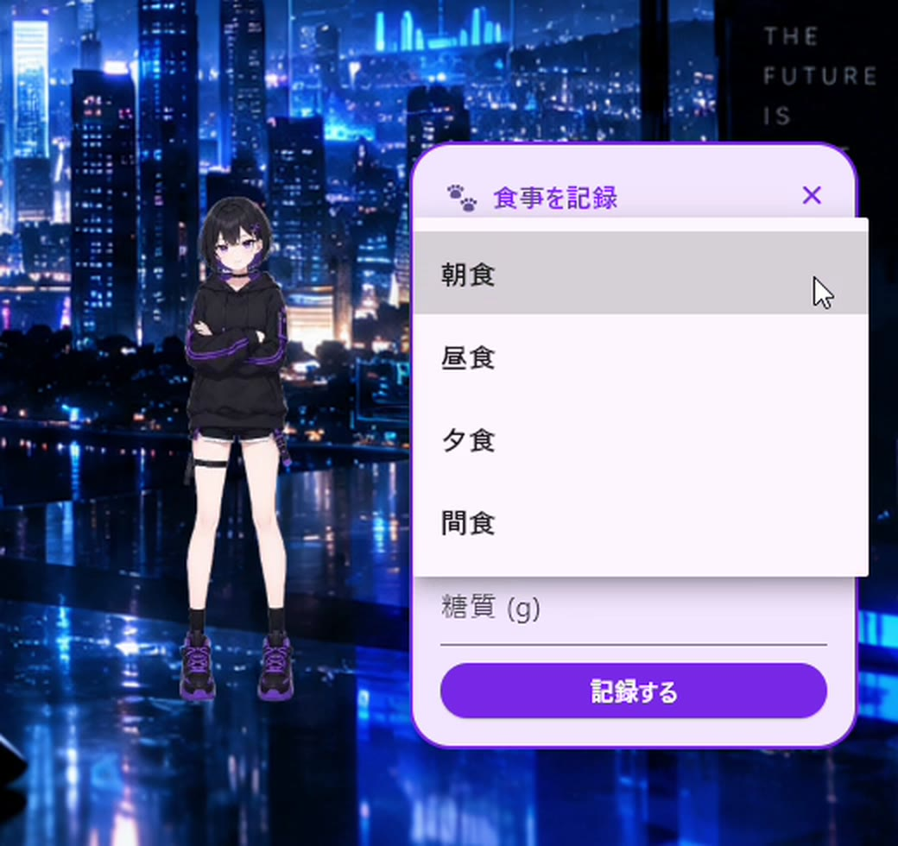
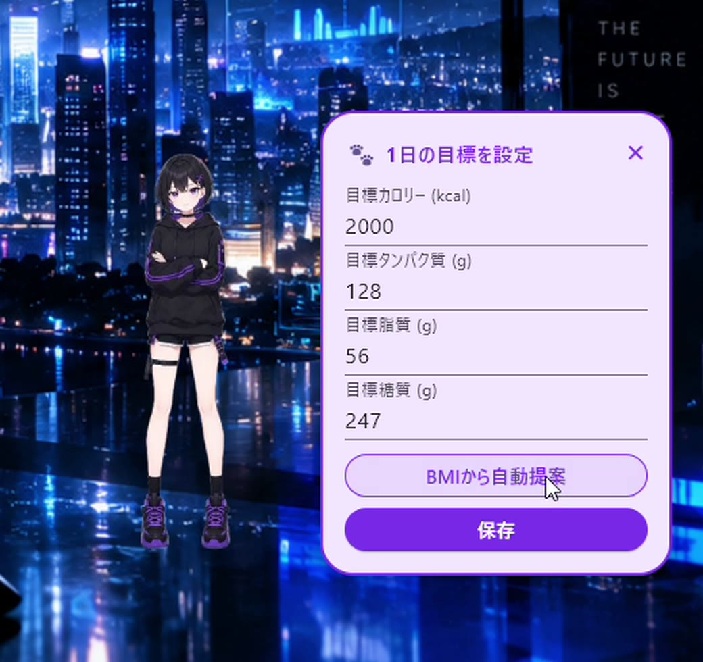
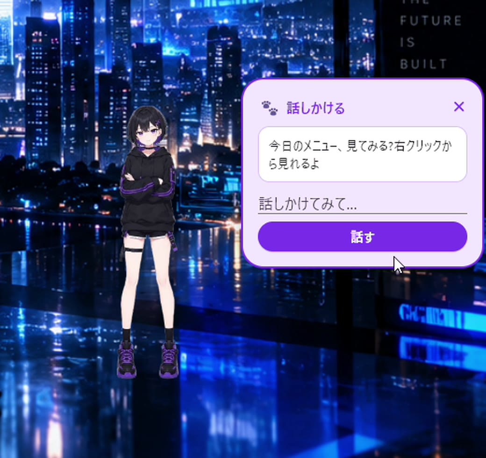
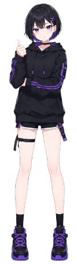
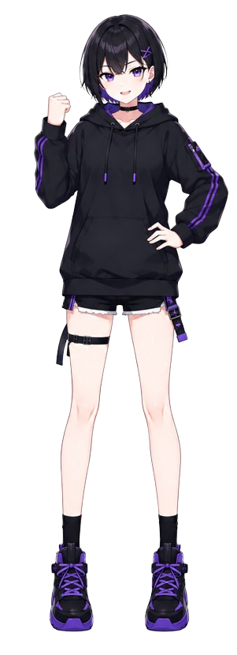
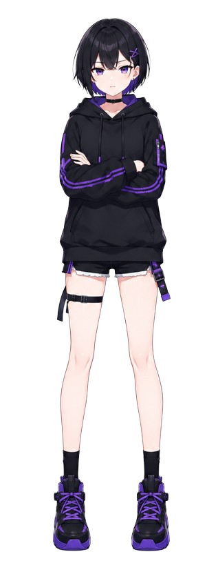
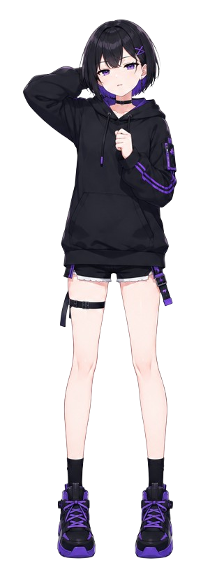
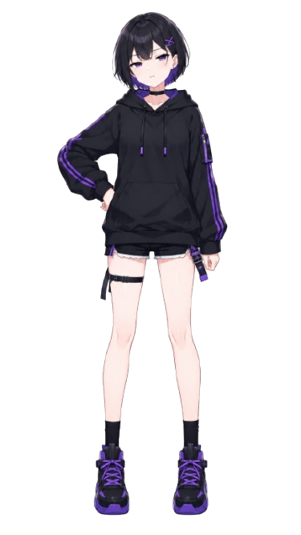

アプリは山ほどあるのに、なぜか続かない。だからキントレーナーは「見ててくれる存在」をつくりました。
スマホの通知は、スワイプひとつで消せてしまう。
アプリを開いて、入力して…その手間が挫折のもと。
ひとりだとサボっても誰にも何も言われない。
背景は透明で、常に最前面。作業のじゃまをせずにデスクトップに常駐し、クリックと右クリックだけで使えます。

BMIを自動で計算。好感度レベル、連続記録、累計トレーニング日数、今日のカロリーとPFCまで、ひと目でわかります。

曜日ごとに鍛える部位が変わる、自宅でできるトレーニングメニューを表示。何をやるか迷う時間をなくします。

朝食・昼食・夕食・間食ごとに、カロリー・タンパク質・脂質・糖質を記録。1日の目標と比べて確認できます。

体格に合わせて、1日の目標カロリーとPFCをボタンひとつで提案。もちろん自分で調整もできます。

テキストで話しかけると、キーワードに合わせてキャラクターが返事をしてくれます。「メニュー教えて」「おはよう」など、ちょっとした会話も。
連続記録や好感度、食べすぎに合わせて、表情とボイスが自動で変わります。「怒らせたくない」が、続ける理由になる。

褒める筋トレや食事を記録したとき
がんばって好感度レベルアップ・週の初回起動
怒る連続記録が途切れた翌日
困るカロリー超過が2日以上続いたとき
もうやったよ！今日2回目のクリック| 3日 | はじめの一歩をお祝い |
| 5日・7日 | 習慣になってきたら特別ボイス |
| 14日 | 2週間継続を祝福 |
| 30日 | 1か月達成の特別ボイス |
| Lv.1 | はじめまして |
| Lv.2 | なんか…いるね |
| Lv.3 | ちょっと頑張ってる |
| Lv.4 | 信頼関係が芽生えた |
| Lv.5 | 本物のトレーニー |
| Lv.∞ | 継続は力なり |
キントレーナーは、キャラクターの立ち絵とボイスを素材として差し替えられる設計。あなたの“推し”を、専属トレーナーにできます。
立ち絵を用意する待機・褒める・がんばって・怒る・困る などの表情差分。
ボイスを用意する褒める・叱る・励ます・連続記録のお祝い など。
差し替えて、あなただけのトレーナーにセリフや反応はそのまま、見た目と声だけが変わります。
Windowsのデスクトップアプリです。Macには対応していません。
背景が透明なキャラクターだけが画面の端に表示されます。好きな場所にドラッグして移動できるので、作業の邪魔にならない位置に置いておけます。
キャラクターをクリックするだけで「今日の筋トレ完了」を記録できます。同じ日にもう一度クリックすると「もうやったよ！」と返してくれます。
連続記録が途切れると、翌日は怒った顔で出迎えられ、連続日数がリセットされます。食べすぎ（カロリー超過）が2日以上続いたときは、困った顔で知らせてくれます。
右クリックの「今日のメニュー」に、曜日ごとのメニューが表示されます。月曜は胸・腕、水曜は脚、土曜は全身…と部位が変わり、日曜は休養日です。
身長・体重から計算したBMIをもとに、1日の目標カロリーとタンパク質・脂質・糖質の目安を自動で提案します。自分で数値を変えることもできます。
お使いのパソコンの中に保存されます。
右クリックメニューの「PC起動時に自動起動」をオンにすると、パソコンを起動したときに自動で立ち上がります。オン／オフはいつでも切り替えられます。
立ち絵（表情の差分）とボイスの素材を差し替えることで、好きなキャラクターのキントレーナーをつくれる設計です。